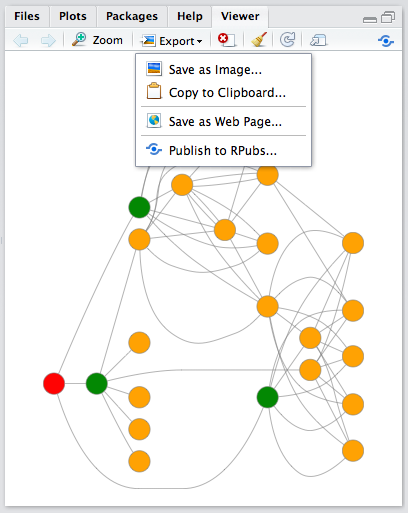
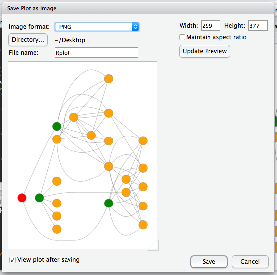
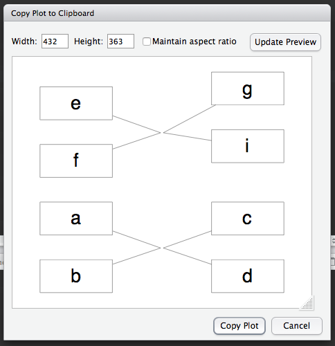
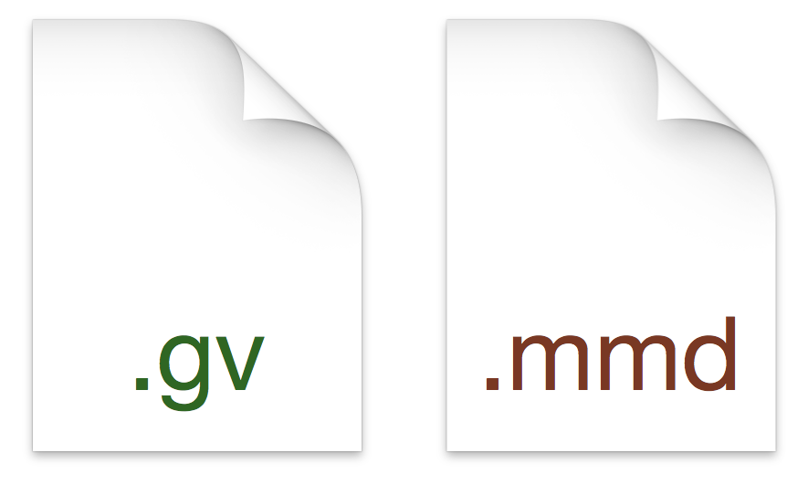

DiagrammeR Docs
Get an overview of DiagrammeR, learn the syntax, check out some examples.
Get an overview of DiagrammeR, learn the syntax, check out some examples.
There is a large range of options for creating and viewing DiagrammeR objects in RStudio. The RStudio Viewer allows you to view and export the graph diagrams created through DiagrammeR. Aside from viewing/exporting, there are several workflows for creating DiagrammeR output such as through R scripts, R Markdown, and with Shiny apps.
The Viewer pane is where all DiagrammeR graph objects are displayed. By default, the Viewer appears on the final tab of the lower right palette. The RStudio Viewer provides several ways to both view and export DiagrammeR output.

As DiagrammeR graph objects are rendered as SVG, the content is scalable and responsive to resizing of the plot window. To enlarge the DiagrammeR output in the Viewer, there are several options:
All methods here have their unique advantages for inspecting output. Image content is not saved at this point.
The Export button provides a dropdown menu containing options for export of DiagrammeR output as an image, as clipboard content, as a web page, and as content for a publication to the RPubs service.
The Save as Image option provides options for interactively resizing the graphic and then saving the image in either the PNG, JPEG, or TIFF format. A live preview is presented, allowing you to precisely resize the content.
There are two options for sizing the output before saving to a graphics file
You may notice that when resizing that the rendered graphic does not stretch in either direction (as raster graphics tend to do when the aspect ratio is not maintained). Rather, padding is added and the graphic is always centered both vertically and horizontally. To avoid additional whitespace when saving, immediately press the Maintain aspect ratio button before sizing the output with the aforementioned approaches.
Copying to clipboard is useful you'd like to paste DiagrammeR output to a word processing document or to an email message without saving an image file to disk.
The window here provides similar controls for sizing output as the export option. As with Export, the initial size of the output in pixels matches that of the plot presented in the Viewer.
The Save as Web page option saves the DiagrammeR graph as a standalone web page. Selecting this option provides a dialog for saving the HTML file. After saving, the file is opened locally in the user's default browser.
RStudio has integrated file support for Graphviz and mermaid files.
Graphviz and mermaid files have .gv and .mmd extensions, respectively. Using files of these types in RStudio provides the advantage of syntax coloring and allowing a quick preview of the diagram (via the Preview button, which is activated in RStudio for these types of files).
Using R Markdown support wihin RStudio allows you to create reports that keep text and R code (as chunks) together in the same source document. When it comes time to export the output (as HTML, for example), you can take advantage of the built in knitr support to knit the R Markdown document to a wide variety of formats (even to an interactive Shiny document). Need to change an assigned value and get an updated report? Just change that value and simply knit again. Everything is recalculated in the revised output document. That's the advantage of reproducible research.
To begin writing an R Markdown document, click the New File button in the RStudio toolbar and select R Markdown. You will see a dialog box that allows you create an R Markdown document with preset options for the following main output types:
It's important to note that each of the options just provides a basic template for the R Markdown document (which has the .Rmd file extension). Thus, you can always change the output type by modifying R Markdown document's front matter (those key-value pairs between the --- lines).
Here is a breakdown of the types of documents you can make.
Create a new R Markdown document using a template to enable export to HTML, PDF, or Word formats. Note the special requirements for the PDF and Word formats.
R Markdown presentation templates allow you to create excellent ioslides, Slidy, and Beamer presentations. Note the special requirements for the Slidy and Beamer formats.

Shiny is web framework for R and Shiny apps are customizable and highly interactive web apps. With this option, you can create an interactive Shiny document or an interactive Shiny IOSlides presentation.
Create specialized documents such as R Package Vignettes (HTML document) or a Tufte Handout (PDF document).
Writing an R Markdown document is not altogether that different from writing a standard R script, you just write the R statements in sections called chunks. Here is a simple R Markdown document in RStudio that contains calls to DiagrammeR's grViz and mermaid functions.
In this R Markdown document, Code Region 1 is the front matter, which specifies the document title, the author, the date, and the type of output (in this case, HTML). Code Regions 1 and 2 are R chunks (delineated from Markdown content by use of ```). The identification of these chunks as R code resides in curly braces (alongside further comma-separated options). These R chunks will yield simple Graphviz and mermaid graphs. Pressing the Knit HTML button will process the document and render an HTML report document in the RStudio Viewer.